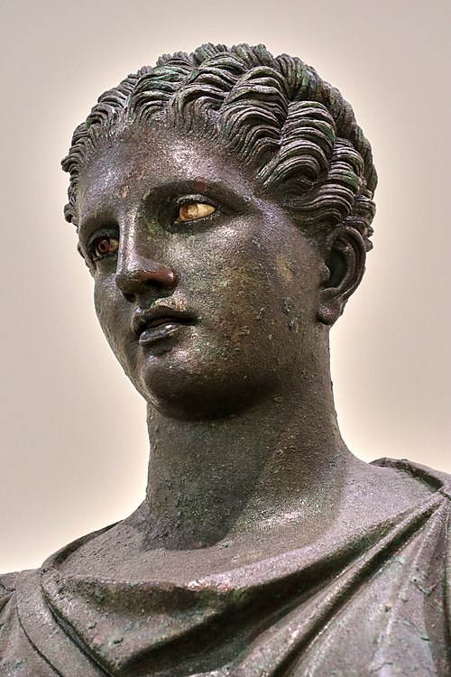

Артеми́да (др.-греч. Ἄρτεμις) — в древнегреческой мифологии вечно юная богиня охоты, женского целомудрия, покровительница всего живого на Земле, дающая счастье в браке и помощь при родах, позднее богиня Луны (её брат Аполлон был олицетворением Солнца). Древние греки приравнивая к Артемиде богиню древних обитателей Таврического полуострова — Тавров Орсилоху, называли ту и другую безразлично Таврополой. У Гомера Артемида — образ девичьей стройности, покровительница охоты. У римлян отождествлялась с Дианой. Культовыми животными Артемиды стали лань и медведица.
Артемида Эфесская.
Классическая Артемида — вечная дева; сопровождающие её нимфы также дают обет безбрачия, те же, кто не соблюдает его — строго караются (как, например, Каллисто). Перед свадьбой богине Артемиде приносились искупительные жертвы. Во многих мифах она представляется мстительной и жестокой: убивает Актеона, детей Ниобы, приказывает Агамемнону принести ей в жертву его дочь Ифигению. Губительные функции Артемиды связаны с её архаическим прошлым — владычицы зверей на Крите. В древнейшей своей ипостаси не только охотница, но и медведица. Такая Артемида, которой приносятся человеческие жертвы, во многом близка древним богиням-матерям, подобным Кибеле и Иштар. Отсюда, возможно, и происходят оргиастические элементы культа, прославляющего плодородие богини. С ней нередко отождествлялись Илифия, пособница рожениц, Геката — богиня мрака и покровительница чародеев, Селена — олицетворение Луны. В художественных изображениях Селена отличается от Артемиды только более полным лицом, костюмом, и дугообразным покрывалом на голове. Артемида (в своей древней ипостаси), как и многие подобные ей богини, защищает женщин и детей, облегчает страдания умирающих, она ассоциируется одновременно и с рождением, и со смертью. Любопытны и не совсем понятны связи Артемиды с медведями. В Брауроне, у восточного побережья Аттики, находился раскопанный сейчас храм Артемиды Брауронии. С одной стороны, в этот храм посвящались одежды умерших при родах женщин: это связано с функцией Артемиды как родовспомогательницы и не заключает в себе каких-либо неожиданностей. Но с этим же храмом был связан странный обычай: афинские девочки в возрасте от пяти до десяти лет поселялись на некоторое время в этом храме, назывались ἄρκτοι, «медведицами», и во время справлявшегося раз в четыре года праздника Брауроний осуществляли, одетые в выкрашенные шафраном одежды, какие-то церемонии в честь Артемиды. С этим обычаем сопоставляют аркадский миф о спутнице Артемиды Каллисто, превращенной ею в медведицу, и видят здесь следы древнего териоморфного — то есть «звериного» облика самой Артемиды. Согласно Котте, Артемид было три: дочь Зевса и Персефоны, родила крылатого Эрота от Гермеса; дочь Зевса третьего и Лето; дочь Уписа и Главки, которую называют Упис.

Бронзовая статуя Артемиды, IV век до н. э.